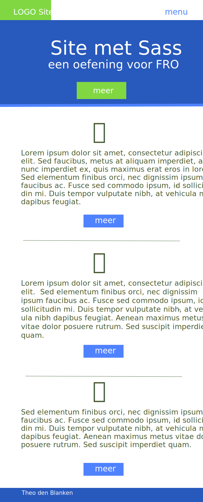
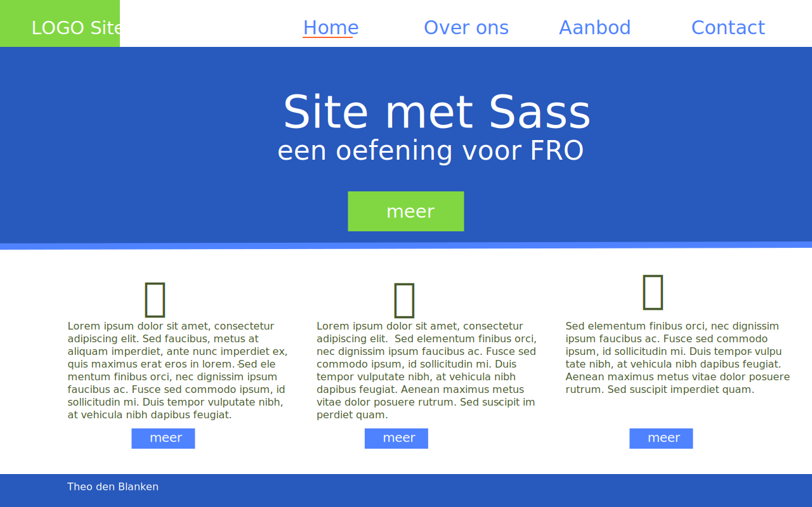

Leerdoelen
- installatie van Sass
- opstarten van Sass in jouw workflow
- variabelen
- SCSS versus Sass
- opdelen en importeren
- mixins
- overerving
Wat is ?
Preprocessor
Syntactically Awesome Style Sheets
- Sass maakt uit meerdere .scss-bestanden en .sass bestanden één CSS-bestand
- Kijk eens in jouw Bootstrap CSS van vorige week hoe groot dat CSS-bestand is
- De developer houdt het overzicht en maakt toch 1 CSS-bestand voor de browser
Een pre-processor maakt van meerdere .scss- en .sass-bestanden één .css-bestand

Een pre-processor maakt van meerdere .scss- en .sass-bestanden één .css-bestand
Wat is handig ?
- opdelen van jouw CSS (vorige dia)
- werken met variabelen (aanpassingen aan huisstijlen eenvoudig!)
- rekenen met variabelen
- mixins besparen je veel herhalingen (DRY)
- overerving (bijvoorbeeld verschillende buttons)
- nesting (stijlen voor elementen in andere elementen)
- bij compilatie komt foutmelding bij fouten
compileren CLI (commandline: opdracht-promt of Terminal)
sass --watch main.scss : style.css

Codevoorbeeld: variabelen in SCSS/SASS
SCSS
SASS
gecompileerd naar CSS
Codevoorbeeld: nesting in SCSS/SASS
SCSS
SASS
gecompileerd naar CSS
Codevoorbeeld: partials (importeren) in SCSS/SASS
SCSS
SASS
gecompileerd naar CSS
Installatie via npm
sudo npm install -g sass
Soms is sudo noodzakelijk omdat bij een 'globale' installatie beheerdersrechten noodzakelijk zijn.
Er wort dan ook naar je beheerderswachtwoord gevraagd.
controle of Sass geïnstalleerd is
Feitelijk vraag je de versie van Sass op met de commandline
sass --version

De opdracht
- Gebruik beide schetsen hiernaast als richtlijn
- Installeer Sass
- Instructies op https://blanken5.home.xs4all.nl/sass.html
- Gebruik eigen namen voor bestanden en variabelen
- Site online
(exclusief sass/scss) - Alle bestanden op GitHub (incl. sass/scss)
- Linkje live versie in
README.md